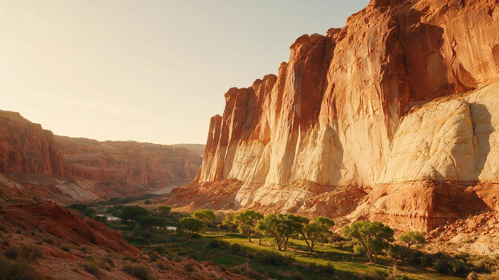

When to go
Waterfalls in spring, cottonwood gold in fall, and summer heat that changes which trails are safe.

An independent guide to Zion Canyon, Springdale, and the trails, seasons, and stays that shape a trip to southwest Utah.
Settle these first and the rest of the planning follows.
Waterfalls in spring, cottonwood gold in fall, and summer heat that changes which trails are safe.

Easy riverside walks, a permit-only ridge, and a river you walk through. Pick by effort, not fame.

Springdale puts you at the shuttle. Nearby towns trade a longer drive for lower prices.

Guided hikes, canyoneering, Narrows gear rentals, and e-bikes in Springdale.
From a paved riverside path to a chain-assisted ridge, Zion covers every comfort level.

A paved path along the Virgin River that ends where The Narrows begins. Shaded walls make it a good choice for hot afternoons.
Steep switchbacks lead to a narrow ridge with chains and drop-offs. A permit is required for the final stretch.

You walk in the river itself, between walls up to about 1,000 feet tall. Cold water and flash floods make planning essential.

Share your dates, group size, and what you want to do. Your request is reviewed and, where it helps, shared with local lodging and tour providers who can reply to you.
Request trip helpRules change, so check nps.gov/zion before you go. Entering the park has not historically required a timed reservation, but specific things do: Angels Landing needs a permit, The Subway and other backcountry routes need wilderness permits, and campgrounds and lodging fill early.
Two full days covers the main canyon: one for the shuttle stops and easier trails, and one for a signature hike such as The Narrows. Three to four days lets you add Kolob Canyons, the east side, or a guided canyoneering trip.
Zion is one of the most-visited national parks in the United States. Early mornings, weekdays, and winter are the quietest times, and the shuttle lines are shortest at the start of the day.
Springdale, at the south entrance, puts you closest to the shuttle. Rockville, Hurricane, and St. George often cost less and add driving time. Kanab and Mount Carmel Junction suit the east side of the park.